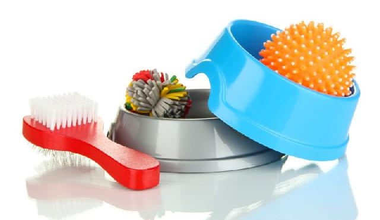

Porque cuidar
Como todos sabem, o gato é um animal muito mais independente que o cachorro, não se submete facilmente ao dono e é mais desconfiado por natureza. Mas isso não significa que os gatos não precisem de cuidado assim como os que dispensamos aos cães, e nem precisem de carinho. Muito ao contrário, os gatos apreciam a limpeza, a higiene, uma boa ração e muito carinho! O gato precisa ser conquistado, e são todos esses cuidados, que passam pela comida, pela limpeza e pelo mimo, que tornarão o gato mais próximo e carinhoso. Cuidando bem do sue bichinho, ele irá retribuir a você em dobro.
Como cuidar
Alimentação: Um dos maiores problemas dos felinos é a obesidade. Por isso, a ração deve ser de boa qualidade e específica para o seu gatinho (por exemplo: castrado, idoso, obeso etc). A ração exposta durante todo o dia perde aroma e “crocância”, então deve ser oferecida em pequenas porções, várias vezes ao dia, até o limite impresso na embalagem ou estipulado pelo veterinário. E não se esqueça de deixar bastante água: o ideal é trocá-la duas vezes ao dia para que esteja sempre fresquinha.
Cama: Providencie para o seu gatinho uma caminha confortável em um lugar sossegado. Existem várias opções em petshops, mas uma caixa de papelão com uma almofadinha ou toalhinha dentro já é o suficiente pra deixá-lo bem feliz e aconchegado.
Banheiro: Gatos são muito limpinhos e geralmente aprendem a usar a caixa de areia por conta própria. Você encontra areia sanitária em pet shops e supermercados. Lembre-se de manter a caixa sempre com bastante areia e sempre limpa – pois os gatos podem evitá-la se ela estiver suja.
Banho: Gatos fazem sua própria higiene e por isso geralmente não precisam de banho. A não ser em casos de problemas de pele ou de pêlo: nesse caso, leve-o ao veterinário para ver se ele também precisa de algum medicamento específico. Escove os pêlos do seu gato com frequencia. A maioria dos gatos adora ser escovado, e isso reduz o número de pêlos perdidos pela casa.
Unhas e pêlos:Use tesouras especiais compradas em pet-shops e corte só a pontinha da unha, para não machucar o gato. Este post explica como se faz, mas se preferir, peça para o seu veterinário mostrar ao vivo. Afiar as unhas é uma atividade prazerosa e necessária para os gatos, então, para preservar seus móveis, é bom ter em casa um arranhador próprio para gatos.
Brincadeiras: Seu gato não é um cachorro que mia: ele tem comportamentos bem diferentes de um cachorro, e um deles é na hora da brincadeira. Alguns gatos são mais brincalhões, outros menos. Há várias opções de brinquedos em pet-shops, mas a maioria gosta mesmo é de fitinhas, bolinhas de papel e caixas de papelão. Não os deixe bricar com linha ou com novelo de lã, pois ele pode engolir e ter sérios problemas.
Adestramento: Gatos não são fáceis de se adestrar, mas você pode evitar comportamentos indesejados espirrando água com um borrifador quando ele fizer algo de errado. NUNCA bata em seu gato. Ele não irá associar a violência ao que acabou de fazer, além do que isso poderá tornar a relação entre vocês muito ruim.
Um ou dois gatinhos? Ter dois gatinhos é sempre melhor que ter um, pois eles fazem companhia um ao outro quando você não está. Alguns são mais sociáveis que outros, então, se você for apresentá-lo a um outro gato ou outro animal, lembre-se de ter muita paciência e de deixá-los se acostumarem aos poucos, sempre com sua supervisão. Esse processo de adaptação pode levar dias ou até semanas, como explicamos neste post aqui.
Viagem: A maioria dos gatos se sentem inseguros e ansiosos fora do seu território. Então, se for viajar, o ideal é deixá-los em casa e pedir a alguém de confiança que os visite diariamente para trocar a água e comida, além de dar um pouco de carinho a eles. Se sua viagem durar mais de 4 dias, você também pode deixá-lo na casa de um parente ou amigo.
Plantas: Gatos adoram mordiscar plantinhas, e isso é bom para a fisiologia deles, pois ajuda a formar e cuspir as bolas de pêlos. Deixe ervinhas ao alcance, e sempre que comprar uma planta nova, tenha o cuidado de verificar se não é venenosa para os felinos. Aqui tem uma lista de plantas que podem ser tóxicas para os gatos.
Coleira: Gatos podem usar coleira, mas é preciso que sejam elásticas para ele não se enforcar caso fique preso em alguma coisa. Coloque uma plaquinha de identificação com o seu telefone, para que as pessoas possam te ligar caso seu gato acesse a rua e se perca. Tire também o guizo que vem na coleira, pois esse barulho constante incomoda os gatos (aliás, quem não se incomodaria, não é mesmo??)
Telas: Gatos são espertos e hábeis, mas também têm seus momentos de distração. Por isso é muito comum gatos caírem da janela de apartamentos e terem sérias lesões ou morrerem. Então, se você ama seu gato e mora em apartamento, instale telas em todas as janelas. Não pense que seu gato é esperto. Acredite: todos os gatos que caíram de janelas pareciam ser tão espertos quanto o seu. Se você mora em casa, pode instalar telas nos muros e portão para que ele não acesse a rua. Saiba mais sobre as telas de proteção aqui.
Saúde: Vacine seu gato adulto anualmente, e dê vermífogos e antipulgas a cada 6 meses (em gatos que vivem dentro de casa) ou a cada 3 meses (em gatos que passeiam na rua). Observe sempre seu apetite, urina, fezes e comportamento, e leve-o ao veterinário caso note alguma alteração.
Castração: Sua gatinha pode gerar até 12 filhotes a cada ano. O que você pretende fazer com eles? Para evitar abandono e maus-tratos, castre sua gatinha! Além disso, a castração torna os animais mais caseiros, o que ajuda a evitar brigas por territórios com gatos da região, doenças, envenenamentos, acidentes e maus-tratos
Saúde
Alergia respiratória: É causada por partículas em suspensão, como pólen, que irrita as vias aéreas e os pulmões. Também podem ter como causa: fumaça, fumaça de cigarro, purificadores de ambiente em aerosol, perfumes. Podem causar descamação, pústulas, ou áreas ulceradas na pele, associadas aos sintomas asmáticos. O teste para alergia respiratória é feito com Teste Intradérmico. Também se faz uso de biópsia, em casos mais difíceis. O Tratamento se faz com antihistamínicos e os casos mais severos com corticosteróides, que pode ter efeitos colaterais.
Alergia por contato:Se manifestam quando o gato tem contato prolongado com alguma susbstancia que não tolera. Como por exemplo: Plantas, especialmente as de folhas oleosas, Limpa-tapete, madeira, poeira doméstica, jornal, carpetes, comedouros plásticos (acne felina), lã, alguns tecidos sintéticos, entre outros. Sinais de contato com alérgeno: Dermatite, mudanças de pigmentação ou erupções na pele. Ocorrência mais comum no queixo, orelhas, dobras de pele, abdomen, sob as unhas, axilas e ao redor do ânus.
Alergia de comida:Entre 5 e 10% das causas de alergias.. Assim como as alergias por contato, a alergia à comida se manifesta como dermatite e intensa coceira, mas em alguns casos pode ocorrer vômito e diarréia. Também pode apresentar oleosidade excessiva na pele, inflamação de ouvido ou queda de pêlo. Gatos tem alergia alimentar, não tanto com relação as substâncias químicas preservativas, mas aos grãos, carne e laticínios usados na sua fabricação. A alergia à comida não aparece do dia para a noite. Pode levar de 1 a 10 anos de exposicão para ocorrer. Mais de 80% dos gatos com alergia alimentar ingeriu o alérgeno por mais de 2 anos. Teste para alergia alimentar deve ser feito em gatos com qualquer sinal crônico de alergia, incluindo a Dermatite Miliar e Complexo Granuloma Eosinofílico. O teste é feito simplesmente oferecendo uma única fonte de proteína que o gato ainda não tenha comido antes. Já existem rações hipoalergênicas, a base de ovelha, coelho e outras carnes que não são normalmente utilizadas na fabricação de ração para gatos. Após 8 semanas já se pode dizer se o animal é ou não alérgico.